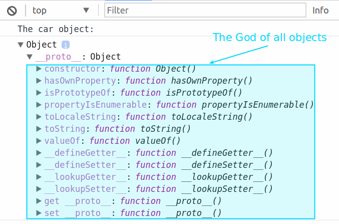

OOP with JavaScript
Created for
Created by

Class-based vs. Prototype-based OOP paradigms
- Class-based paradigm
- Objects are instanses of classes
- Classes inherit from classes
- Classes are immutable
- Prototype-based paradigm
- Objects are instanses of objects
- Objects inherit from objects
- Objects are mutable
Java Classes vs JavaScript Functions
| Java | JavaScript |
|---|---|
| Classes | Functions |
| Constructors | Functions |
| Methods | Functions |
Tables excerpt from Douglas Crockford's "Classical Inheritance in JavaScript"
Object creation
- Two main ways of object creation:
- Object creation ex nihilo ("from nothing")
- Object creation by cloning an existing object
Object Literal (object initializer)
- An object literal, also known as object initializer, is a comma-delimited list of zero or more pairs of property names and associated values of an object, enclosed in curly braces
{}.
var obj = {
property1: value1,
property2: value2,
...
propertyN: valueN
};
- The value of a property can by any JS data type: a primitive, function or an object
By object literals in JavaScript, we can create associative arrays/dictionaries data structures.
Object Literal example
var apple = {
color: "red",
price: [23.5, 22, 25],
calcMinPrice: function(){
return Math.min( ...this.price ); // from ES6
},
calcMaxPrice: function(){
return Math.max( ...this.price ); // from ES6
}
}
console.log( "apple object", apple );
console.log( "apple min price", apple.calcMinPrice() );
Constructor Function
- Constructor function is a function which constructs objects.
- Every function in JS can act as a Constructor function.
- What make difference is the way you call the constructor function!
Constructor Function
// the Constructor Function:
var AppleConstructor = function( color, prices ){
console.log("I'm the AppleConstructor!");
this.color = color;
this.prices = prices;
this.calcMinPrice = function(){
return Math.min( ...this.prices ); // from ES6
};
this.calcMaxPrice = function(){
return Math.max( ...this.prices ); // from ES6
};
}
// objects constructing:
var apple1 = new AppleConstructor("red", [3.5, 2, 2.5]);
var appleN = new AppleConstructor("green", [1.80, 2.10, 2.40]);
// objects usage:
console.log( "apple1 min price: ", apple1.calcMinPrice());
Constructor Function: naming conventions
UpperCase the first letter of constructor function name!
Constructor Function: Pros&Cons
- Pros
- Resembles the classical OPP constructor
- Cons
- the "
new" and "this" pitfalls!
Object properties
Property names
- Property names must be strings
- If they are not, JavaScript try to typecast them
Accessing properties - the dot notation
get = object.property;
object.property = set;
propertymust be a valid identifier!
var obj = {};
obj.f1 = "first"; // valid
obj.1 = "first"; // invalid
Accessing properties - square brackets notation
get = object[property_name];
object[property_name] = set;
property_nameis a string, or expression that evaluates to string!property_namecan be any string, not necessarily valid identifier.
var obj = {};
var keyName = 2;
obj["1"] = "first"; // valid
obj[keyName] = "second"; // valid
console.log(obj)
// Object {1: "first", 2: "second"}
Duplicate property names
- An object can not have 2/more properties with a same name!
- When 2/more properties with a same name are given, then the last of them will overwrite the others.
var obj={
prop1: 1,
prop2: 2,
prop1: 3,
prop4: 4
}
console.log(obj);
// Object {prop1: 3, prop2: 2, prop4: 4}
Computed property names (ES2015)
- ES2015 spec allow an expression to be placed inside square brackets, which will be computed as the property name
var i = 0;
var obj = {
[`key${++i}`] : i,
[`key${++i}`] : i,
[`key${++i}`] : i,
};
console.dir(obj);
// Object
// key1: 1
// key2: 2
// key3: 3
Shorthand property names (ES2015)
var key1 = 'first', key2 = 'second';
var obj = {key1, key2};
console.log(obj);
// Object {key1: "first", key2: "second"}
Shorthand method notation (ES2015)
- We can omit the function keyword, when defining methods after ES2015
var obj = {
id: 1,
sayID(){console.log(this.id)},
}
obj.sayID();
// 1
Excercises
maxRectangleArea
Represent the data, about 5 rectangles with next properties:
id: r1, width: 40, height: 20
id: r2, width: 30, height: 30
id: r3, width: 10, height: 80
id: r4, width: 90, height: 2
id: r5, width: 20, height: 20
Write a function which will return the id of the rectangle with biggest area.
Expected output: r2
Object prototype
intro
- In JavaScript every object is build on the top of a prototype object. I.e. every object has its prototype.
var car = {};
console.log('The car object: ');
console.dir(car);
The Object object (i.e. the object created by Object constructor) does not have prototype. You can think of it as the God of all objects.
{kind=link}
the __proto__ property
- By ECMAScript standard, every object has the [[Prototype]] property, which points to its prototype.
- Most JavaScript engines gives direct access to the [[Prototype]] property by the special property
__proto__. - From ES2015 the
__proto__property is part of the standard!
var car = {};
console.dir(car.__proto__);
// Object
console.dir(car.__proto__.__proto__);
// null
The Object.create() method
syntax
Object.create( prototype_object [, propertiesObject] );
prototype_object- the prototype for the new object.propertiesObject- an object, describing the properties for the newly created object. The syntax is like thepropsobject in Object.defineProperties() methodreturn- new object with the specified prototype object and properties (if given ).
example
var car = {
sayHello:()=>console.log(`Hello, I'm car literal`),
};
var ford = Object.create(car);
ford.sayHello();
// Hello, I'm car literal
console.log(ford.__proto__ === car);
// true
example
var car = {
drive : function(){
console.log(`Driving with ${this.speed} km/h`);
},
speed: 100, // a default value for all objects created by "car"
};
var ford = Object.create(car, {
speed: {
value: 200,
writable: false,
}
});
ford.drive();
// let's try to change the speed
ford.speed = 300;
console.log(`ford.speed: ${ford.speed}`);
Let's got deep - what's in a object?
at Object Literal
var car = {};
at Constructor (what does it do?)
var Car = function(){};
var ford = new Car();
var BMV = new Car();

at Factory
var carFactory = function(){ return {} }
var ford = carFactory();
var BMV = carFactory();

Factory vs Constructor
function CarConstructor(){};
CarConstructor.prototype.sayHello=()=>
console.log(`Hello from CarConstructor.prototype`);
var constructedCar = new CarConstructor();
function CarFactory(){
return {}
};
CarFactory.prototype.sayHello=()=>
console.log(`Hello from CarFactory.prototype`);
var fabricatedCar = CarFactory();
constructedCar.sayHello();
//Hello from CarConstructor.prototype
fabricatedCar.sayHello();
//TypeError: fabricatedCar.sayHello is not a function
Public/Private members in Object Literal
Public Members
- The members of an object are all public members.
var event = {
name: 'Mariinsky Theatre Orchestra with Gergiev',
date: '22.05.2017',
time: '19.30',
place: 'Bulgaria Hall',
}
console.log(`Event name: ${event.name}`);
// yep, event.name is public!
Private Members
- The only way to hide a variable from the outside is to wrap it in a function!
var event = {
// public
name: 'Mariinsky Theatre Orchestra with Gergiev',
date: '22.05.2017',
time: '19.30',
place: 'Bulgaria Hall',
timestamp: (function(){
//private
var ts = Date();
return ts;
})()
}
setTimeout( ()=>{
console.log(
'event.timestamp: ' + event.timestamp + '\n' +
'reported on' +Date()
);
}, 3000)
//event.timestamp: Thu Jun 01 2017 13:16:50 GMT+0300 (EEST)
//reported onThu Jun 01 2017 13:16:54 GMT+0300 (EEST)
Public/Private members in Constructor Function
Public Members
All this properties are public!
var Event = function() {
// public
this.name = 'Mariinsky Theatre Orchestra with Gergiev';
this.date = '22.05.2017';
this.time = '19.30';
this.place = 'Bulgaria Hall';
}
var event = new Event;
Private Members
- All local variables and parameters are private members for the constructor function.
var Event = function() {
//private data
var timestamp = Date();
// privileged method
this.timestamp = (function(){
return timestamp;
})();
// public
this.name = 'Mariinsky Theatre Orchestra with Gergiev';
this.date = '22.05.2017';
this.time = '19.30';
this.place = 'Bulgaria Hall';
}
var event = new Event;
setTimeout( ()=>{
console.log(
'event.timestamp: ' + event.timestamp + '\n' +
'reported on' +Date()
);
}, 3000);
//event.timestamp: Thu Jun 01 2017 13:18:10 GMT+0300 (EEST)
//reported onThu Jun 01 2017 13:18:14 GMT+0300 (EEST)
Public/Private members in Prototype
Public Members
- The members in prototype object are shared among all objects build from that prototype. They are all public members.
- Usually, we put in the prototype only the shared functionality.
Event.prototype.setReminder = function(minutesBefore) {
alert('Reminder set for '+ minutesBefore +' minutes before start!');
};
Private Members in Prototype
var Event = function() {
// public
this.name = 'Mariinsky Theatre Orchestra with Gergiev';
}
Event.prototype = (function(){
// private
var date = Date();
// this is the actual prototype
return {
//privileged
timestamp: date,
}
})();
var event = new Event;
setTimeout( ()=>{
console.log(
'event.timestamp: ' + event.timestamp + '\n' +
'reported on' +Date()
);
}, 3000);
console.dir(event);
Private Members in Prototype: count instances example
var Event = function(name) {
// public
this.name = name // '';
this.id = Object.getPrototypeOf(this).countObj();
}
Event.prototype = (function(){
// private
var count = 1;
// this is the actual prototype
return {
//privileged
countObj: ()=>count++,
}
})();
var events = [];
for (var i = 0; i < 10; i++) {
events.push(new Event(`Event ${i}`));
}
console.log(`events[0].id: ${events[0].id}`);
console.log(`events[4].id: ${events[4].id}`);
console.log(`events[9].id: ${events[9].id}`);
Private Members in Prototype - do we need them?
- Remember, that private members is a class-based OOP paradigm, not a JavaScript!
- Whenever possible try to not using them
var Event = function(name) {
// public
this.name = name // '';
this.id = Event.count++;
}
Event.count = 1;
var events = [];
for (var i = 0; i < 10; i++) {
events.push(new Event(`Event ${i}`));
}
console.log(`events[0].id: ${events[0].id}`);
console.log(`events[4].id: ${events[4].id}`);
console.log(`events[9].id: ${events[9].id}`);
More on Private Members
MDN: Private PropertiesMore on __proto__, [[prototype]] and prototype

These slides are based on
customised version of
framework